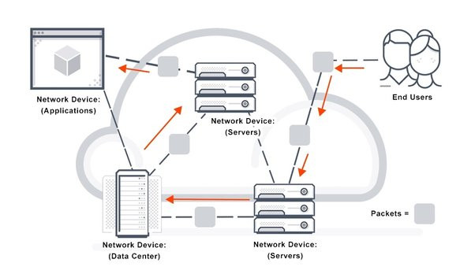
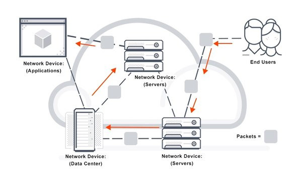

Robert E. Kahn (1938-)
Élete
Robert Elliot Kahn (New York, 1938. december 23. –) a TCP protokoll feltalálója, Vinton G. Cerffel az IP-protokoll elkészítője, azon technológiáké, amelyeket az internetes adatátvitelhez használunk. Miután 1960-ban B.E.E.-t szerzett a New York-i Főiskolán, 1962-ben M.A., majd 1964-ben Ph.D. fokozatot ért el a Princetoni Egyetemen.
Arpa
1972-ben kezdett el dolgozni az ARPA-nál. Ez év októberében, az International Computer Communication Conference-n bemutatta az ARPANET-et, a 40 számítógépből álló hálózatot, amit a nyilvánosság ekkor láthatott először. Miután a DARPA Information Processing Techniques Office (IPTO) igazgatója lett, elkezdte az Egyesült Államok milliárd dolláros stratégiai számítástechnikai programját, a legnagyobb ilyen jellegű kutatási és fejlesztési programot a szövetségi kormány történetében.
SIGCOMM-díj
1993-ban elnyerte a SIGCOMM-díjat " az információs rendszertechnológia fejlesztésében nyújtott előrelátó műszaki hozzájárulásáért és vezető szerepéért ", a 2004-es Turing-díjat pedig Vint Cerffel osztották meg " az internetezés terén végzett úttörő munkáért , beleértve... az Internet alapvető kommunikációs protokolljait ". és az inspirált vezetésért a hálózatépítésben." Vint Cerfnek és Robert Kahnnak Bush elnök az Elnöki Szabadságérmet adományozta Elnyerte az AFIPS Harry Goode Memorial Award-ot, a Marconi-díjat, az ACM SIGCOMM-díjat, az ACM elnöki díját, az IEEE Koji Kobayashi Computer and Communications Award-ot, az IEEE Alexander Graham Bell-érmet , az IEEE harmadik évezredérem, a Az ACM Software Systems Award , a Computerworld/Smithsonian Award, az ASIS Special Award és a Computing Research Board közszolgálati díja. Kétszer kapott honvédelmi miniszteri polgári szolgálati kitüntetést.
További diploma, díjak elnyerése
1998-ban a Paviai Egyetem tiszteletbeli diplomával tüntette ki . 1999-ben elnyerte az Amerikai Számítógép- és Robotikai Múzeum Stibitz-Wilson-díját az Internet úttörő munkájaért az eredeti ARPANET NCP protokoll fő tervezési és fejlesztési közreműködőjével, valamint az Internet TCP/IP protokolljának társfeltalálójaként. Tizenhárom év után elhagyta a DARPA-t, hogy megalapítsa a Corporation for National Research Initiatives-t (CNRI). 2006-ban a cég elnök-vezérigazgatója és az igazgatótanács elnöke volt. A CNRI egy nonprofit szervezet, ami irányítja és pénzügyileg támogatja a nemzeti információs infrastruktúra fejlesztését. 2008-ban megkapta a Japán Díjat.